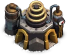

Laboratory — Clash of Clans
Updated: 26 August 2026 · By the Goblins Farm team
The Laboratory upgrades your troops and spells permanently. Unlike a building upgrade, which improves one structure, research improves every copy of that troop in every attack you ever make, which makes an idle lab the most expensive idleness in the game.
- Levels
- 16
- Size
- 3x3
- Category
- Army Building
- Unlocked at
- Town Hall 3
- Most you can place
- 1
- Role
- Army building, research
Why it comes first
A defence upgrade improves one building. A troop research improves every one of those troops, in every attack, permanently. The compounding is enormous, and it is the reason experienced players treat an idle laboratory as an emergency.
What to research
- Troops you actually use, not troops you might use. Researching a unit that never appears in your army is pure waste.
- Your farming army first, because it runs constantly and small gains compound across hundreds of attacks.
- Spells early. Spell research is often cheaper than troop research and affects every attack just as much.
- Upgrade the lab itself promptly at a new Town Hall, since it gates everything else.
How this fits the wider schedule is covered in upgrade priority.
 How it looks at each level
How it looks at each level

Stats by level
| Level | Hitpoints | DPS or effect | Build cost | Build time | Town Hall |
|---|---|---|---|---|---|
| 1 | 500 | — | 5,000 Elixir | 1 m | 3 |
| 2 | 550 | — | 25,000 Elixir | 30 m | 4 |
| 3 | 600 | — | 50,000 Elixir | 2 h | 5 |
| 4 | 650 | — | 100,000 Elixir | 4 h | 6 |
| 5 | 700 | — | 200,000 Elixir | 8 h | 7 |
| 6 | 750 | — | 400,000 Elixir | 16 h | 8 |
| 7 | 830 | — | 800,000 Elixir | 1 d | 9 |
| 8 | 950 | — | 1,300,000 Elixir | 1 d 18 h | 10 |
| 9 | 1,070 | — | 2,100,000 Elixir | 2 d 18 h | 11 |
| 10 | 1,140 | — | 3,800,000 Elixir | 4 d | 12 |
| 11 | 1,210 | — | 5,500,000 Elixir | 6 d | 13 |
| 12 | 1,280 | — | 8,100,000 Elixir | 7 d | 14 |
| 13 | 1,350 | — | 10,800,000 Elixir | 8 d | 15 |
| 14 | 1,400 | — | 13,000,000 Elixir | 9 d | 16 |
| 15 | 1,450 | — | 18,000,000 Elixir | 10 d | 17 |
| 16 | 1,500 | — | 27,000,000 Elixir | 16 d | 18 |
| Town Hall | Available |
|---|---|
| TH3 | 1 |
| TH4 | 1 |
| TH5 | 1 |
| TH6 | 1 |
| TH7 | 1 |
| TH8 | 1 |
| TH9 | 1 |
| TH10 | 1 |
| TH11 | 1 |
| TH12 | 1 |
| TH13 | 1 |
| TH14 | 1 |
| TH15 | 1 |
| TH16 | 1 |
| TH17 | 1 |
| TH18 | 1 |

Where these numbers come from. Read from Clash of Clans' own game files, client build 18.400.21. They are exact for that build and do not reflect anything released after it, so verify in game before committing an upgrade.
Game values are read from Supercell's own game files, reproduced as fan content under Supercell's Fan Content Policy. Goblins Farm is not affiliated with, endorsed, sponsored, or specifically approved by Supercell, and Supercell is not responsible for it.
 Frequently asked
Frequently asked
What should I research first in the Laboratory?
The troops and spells in the army you actually use most, starting with your farming army, since research applies permanently to every future attack and a farming army runs hundreds of times. Researching units you never deploy is wasted.
Is the Laboratory more important than defences?
For progression, generally yes. Research improves every attack you will ever make, while a defence upgrade improves one building, so an idle laboratory costs more over time than a slightly weaker base.
 Keep reading
Keep reading
Goblins Farm is not affiliated with, endorsed by, sponsored by, or specifically approved by Supercell. Clash of Clans is a trademark of Supercell Oy. This material is unofficial fan content produced under Supercell's Fan Content Policy. Game values change with every update; always verify in-game before committing an upgrade.